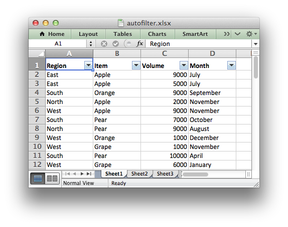

Working with Autofilters
An autofilter in Excel is a way of filtering a 2D range of data based on some simple criteria.
Applying an autofilter
The first step is to apply an autofilter to a cell range in a worksheet using the autofilter() method:
worksheet.autofilter('A1:D11')
As usual you can also use Row-Column notation:
worksheet.autofilter(0, 0, 10, 3) # Same as above.
Filter data in an autofilter
The autofilter() defines the cell range that the filter applies and creates drop-down selectors in the heading row. In order to apply some criteria to the columns to filter out data it is necessary to use either the filter_column() or filter_column_list() methods.
The filter_column method is used to filter columns in a autofilter range based on simple expressions:
worksheet.filter_column('A', 'x > 2000')
worksheet.filter_column('B', 'x > 2000 and x < 5000')
However, it isn’t sufficient to just specify the filter condition. You must also hide any rows that don’t match the filter condition. Rows are hidden using the set_row() hidden parameter. XlsxWriter cannot filter rows automatically since it isn’t part of the file format.
Filtering the data programmatically generally isn’t too difficult. For example:
# Set the autofilter.
worksheet.autofilter('A1:D51')
# Add the filter criteria. The placeholder "Region" in the filter is
# ignored and can be any string that adds clarity to the expression.
worksheet2.filter_column(0, 'Region == East')
# Hide the rows that don't match the filter criteria.
row = 1
for row_data in (data):
region = row_data[0]
# Check for rows that match the filter.
if region == 'East':
# Row matches the filter, no further action required.
pass
else:
# We need to hide rows that don't match the filter.
worksheet.set_row(row, options={'hidden': True})
worksheet.write_row(row, 0, row_data)
# Move on to the next worksheet row.
row += 1
Setting a filter criteria for a column
The :func:`filter_column method can be used to filter columns in a autofilter range based on simple conditions:
worksheet.filter_column('A', 'x > 2000')
The column parameter can either be a zero indexed column number or a string column name.
The following operators are available for setting the filter criteria:
Operator Synonyms
== = eq =~
not = <> ne not =
>
<
>=
<=
and and
or or
The operator synonyms are just syntactic sugar to make you more comfortable using the expressions. It is important to remember that the expressions will be interpreted by Excel and not by Python.
An expression can comprise a single statement or two statements separated by the and and or operators. For example:
'x < 2000'
'x > 2000'
'x == 2000'
'x > 2000 and x < 5000'
'x == 2000 or x == 5000'
Filtering of blank or non-blank data can be achieved by using a value of Blanks or NonBlanks in the expression:
'x == Blanks'
'x == NonBlanks'
Excel also allows some simple string matching operations:
'x =~ b*' # begins with b
'x not ~ b*' # doesn't begin with b
'x =~ *b' # ends with b
'x not ~ *b' # doesn't end with b
'x =~ *b*' # contains b
'x not ~ *b*' # doesn't contains b
You can also use * to match any character or number and ? to match any single character or number. No other regular expression quantifier is supported by Excel’s filters. Excel’s regular expression characters can be escaped using ~.
The placeholder variable x in the above examples can be replaced by any simple string. The actual placeholder name is ignored internally so the following are all equivalent:
'x < 2000'
'col < 2000'
'Price < 2000'
A filter condition can only be applied to a column in a range specified by the autofilter()`() Worksheet method.
Setting a column list filter
Prior to Excel 2007 it was only possible to have either 1 or 2 filter conditions such as the ones shown above in the filter_column() method.
Excel 2007 introduced a new list style filter where it is possible to specify 1 or more ‘or’ style criteria. For example if your column contained data for the months of the year you could filter the data based on certain months:

The filter_column_list() method can be used to represent these types of filters:
worksheet.filter_column_list('A', 'March', 'April', 'May')
The column parameter can either be a zero indexed column number or a string column name.
One or more criteria can be selected:
worksheet.filter_column_list(0, 'March')
worksheet.filter_column_list(1, 100, 110, 120, 130)
Example
See Example: Applying Autofilters for a full example of all these features.